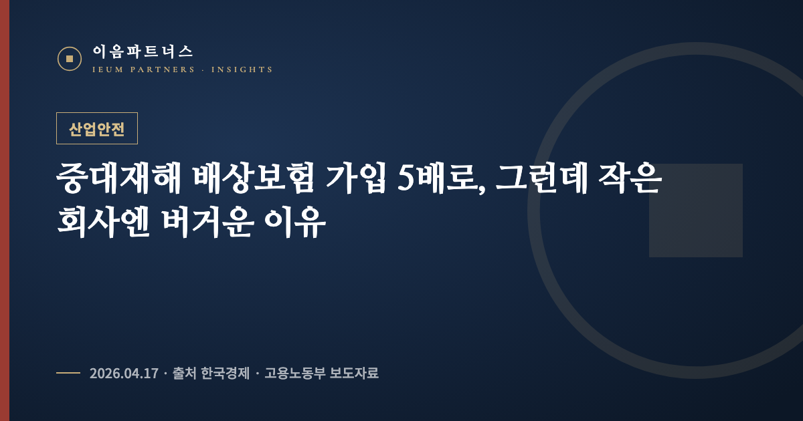

중대재해 배상보험 가입 5배로, 그런데 작은 회사엔 버거운 이유

중대재해처벌법이 50인 미만 사업장까지 넓어진 뒤, 사고가 나면 보험으로 막을 수 있느냐는 질문이 부쩍 늘었습니다. 실제로 중대재해 배상보험(중대재해가 났을 때 회사가 물어야 할 손해배상금과 소송 비용을 메워 주는 보험) 가입은 몇 년 사이 크게 늘었지만, 작은 회사에는 보험료가 적지 않은 부담입니다. 이 글에서는 가입 현황과 이 보험이 해 주는 일, 해 주지 못하는 일을 정리합니다.
보험은 사고 뒤의 돈 문제를 일부 덜어 줄 수 있지만, 대표의 형사 책임까지 대신해 주지는 않습니다. 보험료를 쓰기 전에 우리 회사 안전관리 체계가 어디까지 갖춰져 있는지부터 보는 것이 순서입니다. 무엇부터 점검할지 막막하시다면 카카오톡 채널 이음파트너스로 편하게 물어 주세요.
가입은 얼마나 늘었나
한국경제 보도에 따르면 국내 주요 손해보험사 5곳이 판매한 중대재해 배상보험 신계약은 법이 시행된 2022년 209건에서 2025년 1,115건으로 다섯 배 넘게 늘었습니다. 기업이 낸 원수보험료(보험사가 계약자에게서 직접 받은 보험료)도 같은 기간 121억 원에서 291억 원으로 뛰었습니다. 그런데도 한 손해보험사 관계자는 “문의는 급증했지만 가입 규모는 여전히 미미합니다”라고 말했습니다(한국경제).
| 구분 | 내용 |
|---|---|
| 신계약 건수(주요 5개사) | 2022년 209건 → 2025년 1,115건 |
| 원수보험료 | 121억 원 → 291억 원 |
| 신계약 중 50인 미만 기업 비중 | 2% → 46%(집계한 4개사 기준) |
| 2025년 사망사고 | 573건, 이 가운데 344건이 50인(억) 미만 사업장 |
가장 눈에 띄는 것은 작은 기업의 비중입니다. 2024년 1월부터 50인 미만 사업장에도 법이 적용되면서, 신계약 가운데 50인 미만 기업의 몫이 2%에서 46%로 커졌습니다. 고용노동부 통계로도 2025년 재해조사 대상 사망사고 573건 가운데 344건이 50인(건설업은 공사금액 50억 원) 미만 사업장에서 났습니다(고용노동부 보도자료).
보험이 해 주는 일, 해 주지 못하는 일
이 보험의 핵심은 중대재해가 난 뒤 회사가 내야 할 손해배상금과 민사소송 비용을 보험금으로 메우는 것입니다. 특약에 따라 형사사건 방어 비용이나 징벌적 손해배상(실제 손해보다 무겁게 매기는 배상) 책임까지 담기도 합니다.
그러나 사업주가 형사사건에서 유죄로 확정되면 보험금이 나오지 않습니다. 기사에 나온 한 변호사는 노동부나 검찰 수사에서 보험 가입이 면책 사유로 고려되지 않는다고 짚었습니다. 합의금 마련에는 도움이 될 수 있어도, 대표의 처벌을 막아 주는 장치는 아니라는 뜻입니다.
작은 회사에 특히 버거운 이유
보험료는 업종·규모·보장 한도에 따라 다르지만, 수백만 원에서 수천만 원까지 내야 하는 경우가 적지 않습니다. 영세 사업장에는 해마다 나가는 고정비가 하나 더 생기는 셈입니다. 사고는 작은 사업장에 몰리는데 대비에 쓸 돈은 부족한 구조라, 보험료와 안전 투자 사이에서 고민하는 대표님이 많을 수 있습니다.
대표님이 지금 확인할 것
- 우리 회사 안전보건관리체계(위험을 찾고 줄이는 회사 안의 절차와 책임 분담)가 서류가 아니라 실제로 돌아가고 있는지
- 보험을 검토한다면 보장 범위, 형사 유죄 확정 때 지급하지 않는 조항, 보험료를 함께 따져 봤는지
- 같은 돈을 위험 설비 개선이나 안전 교육에 쓰면 무엇을 바꿀 수 있는지
보험 가입 여부는 회사의 업종과 규모, 재무 사정에 따라 판단할 일입니다. 이 글은 특정 보험사나 상품을 권하지 않으며, 보장 내용은 약관으로 직접 확인하시기 바랍니다.
참고한 자료
- [취재수첩] 중대재해 보험 가입도 버거운 영세기업들 — 한국경제 (2026.04.17)
- 2025년(누적) 산업재해 현황 부가통계 ‘재해조사 대상 사망사고 발생 현황’ 잠정결과 발표 — 고용노동부 보도자료 (2026.03.31)
우리 회사 안전 관리와 사고 대비 비용을 어떻게 나눌지 고민이시라면 카카오톡 채널 이음파트너스에서 함께 정리해 보실 수 있습니다.
※ 이 글은 일반적인 정보 제공을 위한 것으로, 개별 사안은 세무사·노무사 등 전문가와 함께 확인하시기 바랍니다.